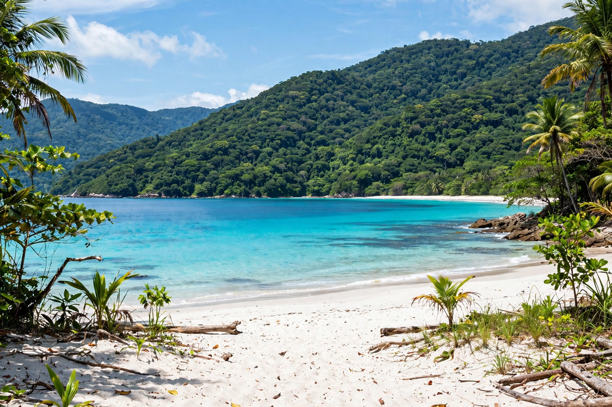

Ilha Grande ("Big Island") is an island in the state of Rio de Janeiro, Brazil, lying off the Costa Verde within the municipality of Angra dos Reis. About 193 square kilometres in area, it is one of Brazil's best-preserved areas of Atlantic Forest, with no cars, some 100 beaches, mountainous jungle interior, and a small population centred on the village of Vila do Abraão. In 2019 Ilha Grande, together with Paraty, was inscribed as a UNESCO World Heritage Site.
| Ilha Grande | |
|---|---|
 | |
| Country | Brazil |
| State | Rio de Janeiro |
| Area | 193 km² |
| Highest point | Pico do Papagaio, 982 m |
| Main settlement | Vila do Abraão |
| Status | State park; UNESCO World Heritage Site (2019) |
The island was inhabited for millennia by Tupi-speaking peoples (its Tamoios name meant "big island"). In colonial times it was a haunt of pirates and smugglers and later a centre of coffee and sugar production worked by enslaved people. In the late 19th century it hosted the Lazareto, a quarantine hospital for immigrants and travellers during cholera and yellow-fever epidemics, and for much of the 20th century it held the notorious Cândido Mendes penal colony at Dois Rios — a maximum-security prison whose isolation helped preserve the island's forests. The prison closed and was demolished in 1994, opening the island to tourism.
Most of the island is protected as Ilha Grande State Park and the Praia do Sul biological reserve. Hiking trails (trilhas) link beaches including Lopes Mendes — regularly ranked among Brazil's most beautiful — Aventureiro, and the lagoons Lagoa Azul and Lagoa Verde, popular for snorkelling. The highest point, Pico do Papagaio (Parrot's Peak, 982 m), is named for its beak-like shape. Access is by boat from Angra dos Reis, Mangaratiba, or Conceição de Jacareí; there are no roads or private cars on the island.